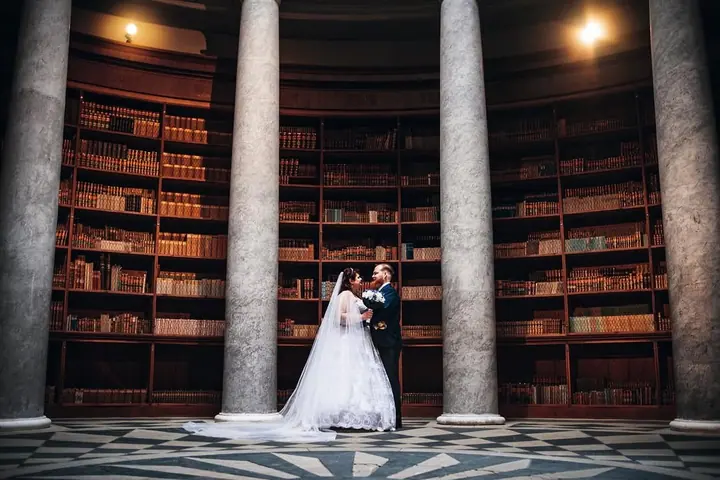

jedna
Svatby
Svatby jsou to hlavní, co fotím. Jsem s vámi od obřadu po společné focení venku, nejradši při večerním světle.


Jmenuji se Daniel Novák a jsem svatební fotograf. Na svatbách rád chytám poslední světlo dne v trávě a na polích, ale stejně dobře se cítím i v zámeckých sálech a knihovnách. Kromě svateb fotím také portréty, firmy a produkty.
Více o mně
Co fotím
jedna
Svatby jsou to hlavní, co fotím. Jsem s vámi od obřadu po společné focení venku, nejradši při večerním světle.
Portréty pro vás, ve dvou nebo pro práci. Klidné focení bez spěchu a bez strojených póz.
Fotky lidí, týmu a prostředí, ve kterém pracujete. Hodí se na web, sociální sítě i do prezentací.
Fotky vašich výrobků do e‑shopu, katalogu nebo na sociální sítě. Čisté a věrné tomu, jak výrobek opravdu vypadá.

Počkáme si spolu na to správné světlo

Za objektivem
Jmenuji se Daniel Novák a fotím hlavně svatby. Mám rád, když se pár na chvíli zastaví, zapomene na foťák a je prostě spolu. Proto se u společného focení nebojím jít do vysoké trávy, k vodě nebo do lesa a počkat na světlo, které to celé dotáhne.
Vedle svateb fotím portréty, firmy a produkty. Ať jde o novomanžele, tým ve firmě nebo výrobek do e‑shopu, chci, aby fotky působily přirozeně a dobře se na ně dívalo i za pár let.
Fotím na Fujifilm a s každým se nejdřív rád domluvím, co od focení čeká. Napište mi, co plánujete, a společně vymyslíme, jak na to.
Daniel
Pošlete mi termín, místo a pár slov o tom, co plánujete. Ozvu se vám zpátky a ověřím, jestli mám volno.
Probereme průběh dne, místa na focení a vaše představy. Ať víte, co čekat, a nic vás ve velký den nepřekvapí.
Jsem u toho nenápadně a nechám vás si den užít. Na společné focení si najdeme klidnou chvíli a dobré světlo.
Fotky pečlivě vyberu a upravím a pošlu vám je v online galerii, odkud si je snadno stáhnete.
Portfolio
Otázky
Napište mi na info@novak-daniel.cz termín a místo. Ozvu se vám, jestli mám volno, a domluvíme se na dalších krocích.
Ano. Kromě svateb fotím portréty, firmy a produkty. Stačí mi napsat, co potřebujete.
Rád fotím venku, na loukách, u vody nebo v lese, ideálně ve večerním světle. Krásné fotky ale vzniknou i na zámku nebo v historickém interiéru.
Upravené fotky vám pošlu v online galerii, odkud si je stáhnete a můžete je sdílet s rodinou.

Napište pár vět o tom, co si představujete. info@novak-daniel.cz